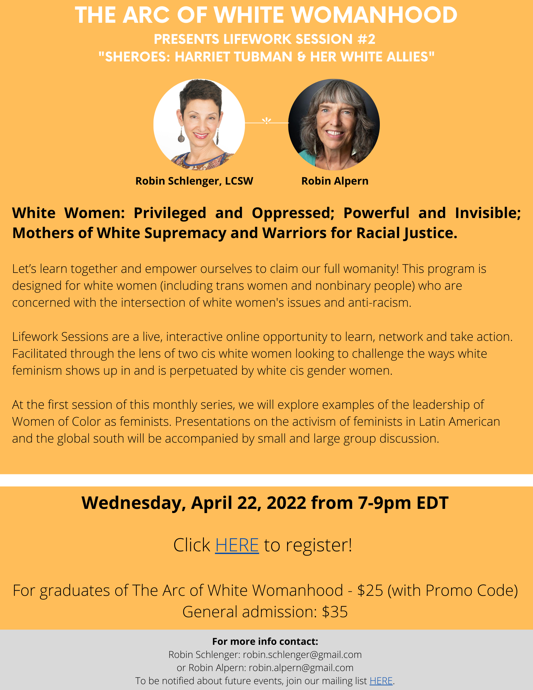

2022-03-27Celebrating Womens History Month Click this link to register today: events.r20.constantcontact.com/register/event?llr=lwndkwabb&oeidk=a07ej44m0zyd6512d25&condition=SO_OVERRIDE Women Making History NOW: An Interview with Robin Mallison Alpern - Robin, who is a friend and co-facilitator of Arc of white womanhood is interviewed by Amira MartinBook: “White Feminism” by Koa Beck: https://www.simonandschuster.com/books/White-Feminism/Koa-Beck/9781982134426Video: “What is white feminism” by Koa Beck: https://www.youtube.com/watch?v=6M5XdITk1w4Book: “Eloquent Rage: A Black Feminist Discovers Her Superpower" by Brittney C. Cooper: https://www.amazon.com/dp/B074DZBTFX/ref=dp-kindle-redirect?_encoding=UTF8&btkr=1Book: What's Up with White Women?: Unpacking Sexism and White Privilege in Pursuit of Racial Justice - Kindle edition by Govan, Ilsa, Smith, Tilman. Politics & Social Sciences Kindle eBooks @ Amazon.com.White Woman Privileges in Interracial Friendships: https://breemcluenwriteslefthanded.medium.com/white-woman-privileges-in-interracial-friendship-cdac781621f5A growing list of role models and political ancestors who work (or worked) from or with a lens on the intersection of white/white-passing privilege and gendered oppression, to show us possible paths: Role Models – WHITE NOISE COLLECTIVE Embodying Right Relationship- Clearing Colonial Implants for a New Earth: https://www.whitecolonialmind.com/PISAB- “Undoing Racism and Community Organizing” Workshops in your area: https://pisab.org/workshops-in-your-area/Center for theStudy of White American Culture: https://cswac.org/upcoming-workshops/Anti Racist Alliance website: http://www.antiracistalliance.com/